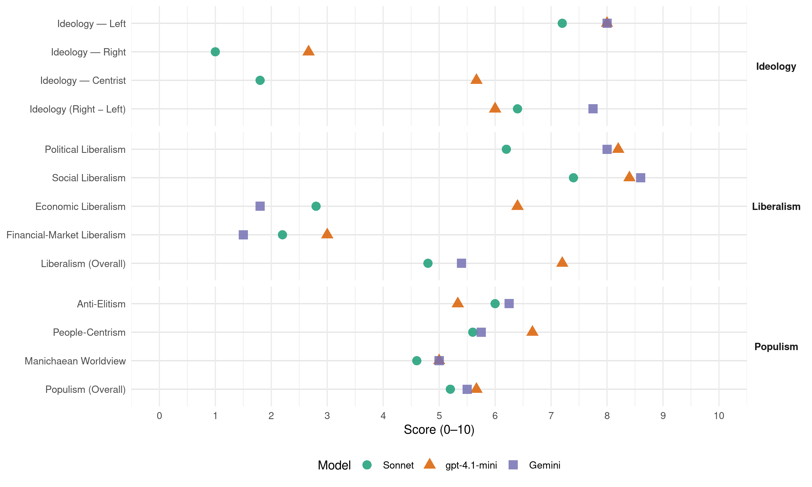

SV (Norway, 1997)
manifesto_id 12221_199709
Get full text: This site shows derived annotations and short verbatim quotes only. The full manifesto text is © Manifesto Project / WZB — obtain it via manifesto-project.wzb.eu using the manifesto_id above.
Headline scores
| Dimension | Sonnet | gpt-4.1-mini | Gemini |
|---|---|---|---|
| Populism (Overall) | 5.2 | 5.7 | 5.5 |
| Anti-Elitism | 6.0 | 5.3 | 6.2 |
| People-Centrism | 5.6 | 6.7 | 5.8 |
| Manichaean Worldview | 4.6 | 5.0 | 5.0 |
| Ideology (Right − Left) | 6.4 | 6.0 | 7.8 |
| Liberalism (Overall) | 4.8 | 7.2 | 5.4 |
| Political Liberalism | 6.2 | 8.2 | 8.0 |
| Social Liberalism | 7.4 | 8.4 | 8.6 |
| Economic Liberalism | 2.8 | 6.4 | 1.8 |
| Financial-Market Liberalism | 2.2 | 3.0 | 1.5 |
Evidence per dimension
Economic Liberalism
Gemini · score 1.0 · verified · chunk 1
“øke statlig eierskap i bedrifter”
SV VIL I PERIODEN: arbeide for øke statlig eierskap i bedrifter for å sikre nasjonalt eierskap.
Gemini · score 2.0 · verified · chunk 2
“gå mot liberalisering som åpner for konkurranse”
og infastruktur. SV vil gå mot liberalisering som åpner for konkurranse, “kaos” på sporet.
Gemini · score 2.0 · verified · chunk 3
“motarbeide at rammene for romavlytting utvides”
Økt markedsstyring, deregulering og privatisering har erstatta disse. I stedet for en politikk for full sysselsetting snakker regjeringa nå om at det er nødvendig med en viss ledighet
Gemini · score 3.0 · verified · chunk 4
“husbankrentene skal være under politisk kontroll”
SV mener at husbankrentene skal være under politisk kontroll ved at Stortinget vedtar rentesatsene.
Gemini · score 1.0 · verified · chunk 5
“motstander av EØS-avtalen og et globalt frihandelssystem”
sjølberging av mat både i nord og sør. SV er derfor motstander av EØS-avtalen og et globalt frihandelssystem. WTO, slik det fungerer i dag
gpt-4.1-mini · score 4.0 · verified · chunk 1
“Markedet har ingen mekanismer for å ivareta samfunnets felles interesser, men kun de økonomiske interessene”
Når markedet bestemmer, vil tjenestetilbudet og den sosiale sikkerheten for den enkelte avhenge av egne økonomiske ressurser. Tjenestene styres ikke ut fra hvilke reelle behov folk har, men utfra hvilke tjenester det er mulig å skape profitt på gjennom salg til de som har råd. Markedet har ingen mekanismer for å ivareta samfunnets felles interesser, men kun de økonomiske interessene aktørene i markedet har.
gpt-4.1-mini · score 8.0 · verified · chunk 2
“marked, konkurranse, næringsliv, foretak, skatt, handel, regulering, privatisering”
Topic check: the quote must mention market, competition, business, enterprise, tax, trade, regulation, privatization, or related economic-policy terms.
gpt-4.1-mini · score 7.0 · verified · chunk 3
“SV vil ha en aktiv næringspolitikk som legger større vekt på nyetableringer, økt offentlig engasjement og en”deling av arbeid”-reform som gir ei mer rettferdig fordeling av arbeid og inntekt.”
SVs mål er arbeid til alle. Politikerne kan ikke si fra seg sitt ansvar for å skaffe arbeid til alle. SV vil ha en aktiv næringspolitikk som legger større vekt på nyetableringer, økt offentlig engasjement og en “deling av arbeid”-reform som gir ei mer rettferdig fordeling av arbeid og inntekt. 5.1 LEDIGHETEN - ET POLITISK VALG Det er et paradoks at vi har høy arbeidsledighet samtidig som ledigheten koster samfunnet dyrt, og mange viktige oppgaver i samfunnet forblir uløste.
gpt-4.1-mini · score 7.0 · verified · chunk 4
“omlegging til grønn skatt må også innebære at skattebyrden flyttes fra beskatning på arbeidskraft til skatt på energiforbruk”
Ei omlegging til grønn skatt må forsøke å forene to viktige hensyn: Grønne avgifter er viktige for å skape oppslutning om skatten og for å drive fram omstilling av produksjon og forbruk. Men ei omlegging til grønn skatt må også innebære at skattebyrden flyttes fra beskatning på arbeidskraft til skatt på energiforbruk, transport, uttak- og bruk av naturressurser, avfall osv.
gpt-4.1-mini · score 6.0 · verified · chunk 5
“øke norsk import fra fattige land i sør”
SV går inn for å øke norsk import fra fattige land i sør på bekostning av import fra rike vestlige land. Høyere råvarepriser, gjeldssletting og investeringshjelp for å øke muligheten for bearbeiding av egne råvarer er tiltak som kan bety mye for den tredje verdens utviklingsmuligheter.
Sonnet · score 2.0 · verified · chunk 1
“Markedets makt må bli mindre”
Den enkeltes liv og hverdag påvirkes av en pågående og aggressiv markedsøkonomi. Markedets makt må bli mindre hvis vi skal få mer frihet som arbeidstakere
Sonnet · score 3.0 · verified · chunk 2
“SV vil gå mot liberalisering som åpner for konkurranse”
arbeide for økt kjøp av offentlige jernbanetjenester for å bedre tilbud og redusere prisen. arbeide for at NSB utvikles som transportselskap med felles ledelse for drift og infastruktur. SV vil gå mot liberalisering som åpner for konkurranse
Sonnet · score 3.0 · verified · chunk 3
“Økt markedsstyring, deregulering og privatisering har erstatta disse”
Stortingsflertallet bestående av Arbeiderpartiet og de borgerlige partiene har gitt fra seg mange av styringsmekanismene. Økt markedsstyring, deregulering og privatisering har erstatta disse.
Sonnet · score 3.0 · verified · chunk 4
“skattebyrden flyttes fra beskatning på arbeidskraft”
ei omlegging til grønn skatt må også innebære at skattebyrden flyttes fra beskatning på arbeidskraft til skatt på energiforbruk, transport, uttak- og bruk av naturressurser
Sonnet · score 3.0 · verified · chunk 5
“motstander av EØS-avtalen og et globalt frihandelssystem”
SV er derfor motstander av EØS-avtalen og et globalt frihandelssystem. WTO, slik det fungerer i dag, representerer et slikt system
Financial-Market Liberalism
Gemini · score 1.0 · verified · chunk 1
“avgifter på kapitaloverføringer mellom land”
arbeide for at det innføres avgifter på kapitaloverføringer mellom land for å begrense den frie flyten
Gemini · score 3.0 · verified · chunk 2
“subsidiert studierente som er under markedsrenta”
løpet av perioden til 50 prosent og ei subsidiert studierente som er under markedsrenta. arbeide for økt
Gemini · score 2.0 · verified · chunk 4
“høyere skatt på kapitalinntekt”
Ved å innføre økte minstefradrag, økt progresjon og høyere skatt på kapitalinntekt, kombinert med
Gemini · score 0.0 · verified · chunk 5
“internasjonal skatt på all valutahandel”
foregangsland for å få innført en internasjonal skatt på all valutahandel gjennom initiativer i internasjonale fora
gpt-4.1-mini · score 3.0 · verified · chunk 1
“liberaliseringen av kredittmarkedet ble en fiasko. De største forretningsbankene gikk konkurs og staten måtte overta”
Internasjonalisering av økonomien har redusert hvert enkelt lands mulighet til å styre. I Norge ble viktige styringsinstrumenter i kapitalmarkedet avvikla av det politiske flertallet på 1980-tallet. Denne avviklinga har medvirket sterkt til de store svingningene vi har hatt i norsk økonomi seinere, med høye renter og stor arbeidsløshet som følge. Liberaliseringen av kredittmarkedet ble en fiasko. De største forretningsbankene gikk konkurs og staten måtte overta.
gpt-4.1-mini · score 3.0 · verified · chunk 5
“arbeide for at Norge blir et foregangsland for å få innført en internasjonal skatt på all valutahandel”
SV VIL I PERIODEN: arbeide for at Norge blir et foregangsland for å få innført en internasjonal skatt på all valutahandel gjennom initiativer i internasjonale fora og gjennom å gå foran med egne tiltak.
Sonnet · score 1.0 · verified · chunk 1
“avgifter på kapitaloverføringer mellom land”
at det innføres avgifter på kapitaloverføringer mellom land for å begrense den frie flyten av finanskapital.
Sonnet · score 3.0 · verified · chunk 2
“subsidiert studierente som er under markedsrenta”
arbeide for heving av stipendandelen i løpet av perioden til 50 prosent og ei subsidiert studierente som er under markedsrenta
Sonnet · score 2.0 · verified · chunk 3
“arbeide for politisk bestemte minimums- og maksimumspriser på elektrisitet”
arbeide for felles nordiske miljøavgifter som gir vannkraft et fortrinn framfor kull- og kjernekraft. arbeide for politisk bestemte minimums- og maksimumspriser på elektrisitet. arbeide for statlig monopol på import og eksport av elektrisk kraft.
Sonnet · score 3.0 · verified · chunk 4
“husbankrentene skal være under politisk kontroll”
SV mener at husbankrentene skal være under politisk kontroll ved at Stortinget vedtar rentesatsene
Sonnet · score 2.0 · verified · chunk 5
“internasjonal skatt på all valutahandel”
arbeide for at Norge blir et foregangsland for å få innført en internasjonal skatt på all valutahandel gjennom initiativer
Political Liberalism
Gemini · score 8.0 · verified · chunk 1
“forny det parlamentariske demokratiet”
2.4.1 FORNY DET PARLAMENTARISKE DEMOKRATIET Det politiske demokratiet må utvides.
Gemini · score 8.0 · verified · chunk 2
“demokratisk garanti mot maktovergrep”
prøves for domstolene. Dette er en demokratisk garanti mot maktovergrep, som ikke eksisterer
Gemini · score 8.0 · verified · chunk 3
“Dette er en demokratisk garanti mot maktovergrep”
Det ordinære politiet er underlagt offentlighet i den forstand at dets konklusjoner må prøves for domstolene. Dette er en demokratisk garanti mot maktovergrep, som ikke eksisterer når det gjelder et hemmelig politi.
Gemini · score 8.0 · verified · chunk 4
“ivaretat religionsfrihet og ytringsfrihet for alle”
viktig å ivareta religionsfrihet og ytringsfrihet for alle. Ved at vi har statskirke
Gemini · score 8.0 · verified · chunk 5
“respekt for mindretallets kulturelle, økonomiske, språklige og demokratiske rettigheter”
utfordringa i de fleste tilfeller vil være å oppnå respekt for mindretallets kulturelle, økonomiske, språklige og demokratiske rettigheter innenfor eksisterende statsdannelser.
gpt-4.1-mini · score 8.0 · verified · chunk 1
“SV vil gå inn for at statskirkesystemet oppheves, og vil foreslå at grunnloven endres på dette punktet”
Det er viktig å ivareta religionsfrihet og ytringsfrihet for alle. Ved at vi har statskirke i Norge favoriserer vi positivt ett livssyn. SV vil gå inn for at statskirkesystemet oppheves, og vil foreslå at grunnloven endres på dette punktet. For SV er det et grunnleggende prinsipp at ingen mennesker skal arve spesielle verv i samfunnet.
gpt-4.1-mini · score 9.0 · verified · chunk 2
“demokrati, rettigheter, valg, domstoler, media, regjering, parlament”
Topic check: a verbatim quote for lib_political must mention democracy, rights, elections, courts, media, government, parliament, or a related political-institution term.
gpt-4.1-mini · score 8.0 · verified · chunk 3
“Datatilsynet har en viktig oppgave ikke bare som kontroll og konsesjonsmyndighet, men også som premissleverandør i den offentlige debatt.”
Datatilsynet har en viktig oppgave ikke bare som kontroll og konsesjonsmyndighet, men også som premissleverandør i den offentlige debatt. Datatilsynets informasjonsvirksomhet er nødvendig for å bevisstgjøre registeransvarlige og brukere om personvernspørsmål og å stimulere den offentlige personverndebatt.
gpt-4.1-mini · score 8.0 · verified · chunk 4
“arbeide for at pasientombud etableres i alle fylker. Ombudet må ha en uavhengig rolle”
Pasienters rettssikkerhet må styrkes. Enhver som skrives inn i psykisk helsevern uten eget samtykke må på statens bekostning få juridisk bistand. Det må føres statistikk over tvangsmiddelbruk og tvangsbehandlingstiltak, og slik statistikk må bli offentlig tilgjengelig. SV VIL I PERIODEN : arbeide for rett til fornyet vurdering av diagnose. arbeide for ordninger for erstatningsansvar for feil begått i helsevesenet innenfor det som anses “rimelig” i norsk rettsvesen. arbeide for valgfrihet på behandlingsform hvor det er mulig å velge. arbeide for at pasientombud etableres i alle fylker. Ombudet må ha en uavhengig rolle.
gpt-4.1-mini · score 8.0 · verified · chunk 5
“arbeide for at FN reformeres i demokratisk retning”
arbeide for at FN reformeres i demokratisk retning og blir mer representativ for verdenssamfunnet. Sikkerhetsrådet utvides med flere medlemmer fra Sør. Grupper av utviklingsland må gis vetorett når stormaktspolitikk forsøkes realisert gjennom FN-systemet.
Sonnet · score 7.0 · verified · chunk 1
“mer levende demokrati”
SVs visjon er at kapitalisme og pengemakt erstattes av solidaritet, rettferdig fordeling, vern om miljøet og et mer levende demokrati. Vi må ta tilbake politiske styringsredskap
Sonnet · score 6.0 · verified · chunk 2
“demokratisk garanti mot maktovergrep”
Dette er en demokratisk garanti mot maktovergrep, som ikke eksisterer når det gjelder et hemmelig politi
Sonnet · score 6.0 · verified · chunk 3
“demokratisk garanti mot maktovergrep”
Det ordinære politiet er underlagt offentlighet i den forstand at dets konklusjoner må prøves for domstolene. Dette er en demokratisk garanti mot maktovergrep, som ikke eksisterer når det gjelder et hemmelig politi.
Sonnet · score 6.0 · verified · chunk 4
“styrking av FN, bistand til fattige land”
SV vil at Norge fører en aktiv utenrikspolitikk med vekt på styrking av FN, bistand til fattige land og der vi tar vår del av ansvaret for mennesker på flukt
Sonnet · score 6.0 · verified · chunk 5
“demokratiutvikling og bidra til tiltak”
aktivt støtte demokratiutvikling og bidra til tiltak som øker folks mulighet til deltakelse i valg og demokratiske prosesser
Liberalism (Overall)
Gemini · score 5.0 · verified · chunk 1
“forny det parlamentariske demokratiet”
2.4.1 FORNY DET PARLAMENTARISKE DEMOKRATIET Det politiske demokratiet må utvides.
Gemini · score 5.0 · verified · chunk 2
“demokratisk garanti mot maktovergrep”
prøves for domstolene. Dette er en demokratisk garanti mot maktovergrep, som ikke eksisterer
Gemini · score 6.0 · verified · chunk 3
“Dette er en demokratisk garanti mot maktovergrep”
Det ordinære politiet er underlagt offentlighet i den forstand at dets konklusjoner må prøves for domstolene. Dette er en demokratisk garanti mot maktovergrep, som ikke eksisterer når det gjelder et hemmelig politi.
Gemini · score 6.0 · verified · chunk 4
“aktiv etnisk likestilling”
SV vil arbeide for aktiv etnisk likestilling. Etnisk likestilling betyr at
Gemini · score 5.0 · verified · chunk 5
“respekt for mindretallets kulturelle, økonomiske, språklige og demokratiske rettigheter”
utfordringa i de fleste tilfeller vil være å oppnå respekt for mindretallets kulturelle, økonomiske, språklige og demokratiske rettigheter innenfor eksisterende statsdannelser.
gpt-4.1-mini · score 6.0 · verified · chunk 1
“SV vil gå inn for at statskirkesystemet oppheves, og vil foreslå at grunnloven endres på dette punktet”
Det er viktig å ivareta religionsfrihet og ytringsfrihet for alle. Ved at vi har statskirke i Norge favoriserer vi positivt ett livssyn. SV vil gå inn for at statskirkesystemet oppheves, og vil foreslå at grunnloven endres på dette punktet. For SV er det et grunnleggende prinsipp at ingen mennesker skal arve spesielle verv i samfunnet.
gpt-4.1-mini · score 9.0 · verified · chunk 2
“demokrati, rettigheter, likestilling, marked, konkurranse, regulering, privatisering”
The manifesto discusses political rights, social equality, and market competition and regulation.
gpt-4.1-mini · score 7.0 · verified · chunk 3
“SV vil ha en aktiv næringspolitikk som legger større vekt på nyetableringer, økt offentlig engasjement og en”deling av arbeid”-reform som gir ei mer rettferdig fordeling av arbeid og inntekt.”
SVs mål er arbeid til alle. Politikerne kan ikke si fra seg sitt ansvar for å skaffe arbeid til alle. SV vil ha en aktiv næringspolitikk som legger større vekt på nyetableringer, økt offentlig engasjement og en “deling av arbeid”-reform som gir ei mer rettferdig fordeling av arbeid og inntekt. 5.1 LEDIGHETEN - ET POLITISK VALG Det er et paradoks at vi har høy arbeidsledighet samtidig som ledigheten koster samfunnet dyrt, og mange viktige oppgaver i samfunnet forblir uløste.
gpt-4.1-mini · score 8.0 · verified · chunk 4
“arbeide for at pasientombud etableres i alle fylker. Ombudet må ha en uavhengig rolle”
Pasienters rettssikkerhet må styrkes. Enhver som skrives inn i psykisk helsevern uten eget samtykke må på statens bekostning få juridisk bistand. Det må føres statistikk over tvangsmiddelbruk og tvangsbehandlingstiltak, og slik statistikk må bli offentlig tilgjengelig. SV VIL I PERIODEN : arbeide for rett til fornyet vurdering av diagnose. arbeide for ordninger for erstatningsansvar for feil begått i helsevesenet innenfor det som anses “rimelig” i norsk rettsvesen. arbeide for valgfrihet på behandlingsform hvor det er mulig å velge. arbeide for at pasientombud etableres i alle fylker. Ombudet må ha en uavhengig rolle.
gpt-4.1-mini · score 6.0 · verified · chunk 5
“arbeide for at FN reformeres i demokratisk retning”
arbeide for at FN reformeres i demokratisk retning og blir mer representativ for verdenssamfunnet. Sikkerhetsrådet utvides med flere medlemmer fra Sør. Grupper av utviklingsland må gis vetorett når stormaktspolitikk forsøkes realisert gjennom FN-systemet.
Sonnet · score 5.0 · verified · chunk 1
“et mer levende demokrati”
SVs visjon er at kapitalisme og pengemakt erstattes av solidaritet, rettferdig fordeling, vern om miljøet og et mer levende demokrati.
Sonnet · score 5.0 · verified · chunk 2
“sterk folkevalgt styring av utviklinga”
SV vil arbeide for at det skal være sterk folkevalgt styring av utviklinga innen dette feltet. Etiske og økologiske hensyn må styre bioteknologien
Sonnet · score 4.0 · verified · chunk 3
“Velferdsstaten er en motkraft til markedskreftene”
Velferdsstaten er et viktig redskap for å fordele verdiene i samfunnet på en mer rettferdig måte. Velferdsstaten er en motkraft til markedskreftene og sikrer folk større innflytelse over sine levekår.
Sonnet · score 5.0 · verified · chunk 4
“aktiv etnisk likestilling”
SVs mål er et romslig samfunn der ulikheter i utseende, tro eller kulturell bakgrunn ikke gir ulik mulighet til arbeid, utdanning og deltakelse i samfunnslivet. SV vil arbeide for aktiv etnisk likestilling
Sonnet · score 5.0 · verified · chunk 5
“demokratiutvikling og bidra til tiltak”
aktivt støtte demokratiutvikling og bidra til tiltak som øker folks mulighet til deltakelse i valg og demokratiske prosesser
Anti-Elitism
Gemini · score 8.0 · verified · chunk 1
“markedspolitikerne i det norske Storting”
enten trusselen kommer fra EU-kommisjonen eller markedspolitikerne i det norske Storting. FRIHET TIL Å BESTEMME
Gemini · score 5.0 · verified · chunk 2
“avmektige overfor voksende flernasjonale konsern”
og politisk bakromspolitikk. Større folkevandringer og
Gemini · score 6.0 · verified · chunk 3
“Stortingsflertallet bestående av Arbeiderpartiet og de borgerlige partiene har gitt fra seg mange av styringsmekanismene”
Ledigheten framstilles som utenfor samfunnets kontroll - prisgitt internasjonale konjunkturer og “internasjonal” ledighet. SV tar utgangspunkt i at ledigheten er politisk bestemt. Stortingsflertallet bestående av Arbeiderpartiet og de borgerlige partiene har gitt fra seg mange av styringsmekanismene. Økt markedsstyring, deregulering og privatisering har erstatta disse.
Gemini · score 6.0 · verified · chunk 5
“Verdensbanken og Valutafondet er udemokratiske institusjoner”
8.3.1 VERDENSBANKEN OG VALUTAFONDET Verdensbanken og Valutafondet er udemokratiske institusjoner, dirigert av interessene til det rike
gpt-4.1-mini · score 8.0 · verified · chunk 1
“FOLKEMAKT MOT PENGEMAKT”
FOLKEMAKT MOT PENGEMAKT Arbeidsprogram for Sosialistisk Venstreparti 1997-2001 1. FOLKEMAKT MOT PENGEMAKT FRIHET FRA MARKEDSTVANG Den enkeltes liv og hverdag påvirkes av en pågående og aggressiv markedsøkonomi. Markedets makt må bli mindre hvis vi skal få mer frihet som arbeidstakere, som forbrukere, som utdanningssøkende, omsorgstrengende - og for å verne miljøet.
gpt-4.1-mini · score 5.0 · verified · chunk 4
“et samfunn med store sosiale forskjeller, hvor enkelte grupper opplever utestengning som følge av etnisk eller religiøs bakgrunn”
…kan bli et samfunn med økende kriminalitet og konflikter, med påfølgende store samfunnskostnader. SV mener at det er behov for egne tiltak for å stanse denne utviklinga. Etnisk likestilling av minoritetsgrupper i det norske samfunnet krever mer aktive tiltak enn det vi hittil har sett.
gpt-4.1-mini · score 3.0 · verified · chunk 5
“Verdensbanken og Valutafondet er udemokratiske institusjoner, dirigert av interessene til det rike nord”
Verdensbanken og Valutafondet er udemokratiske institusjoner, dirigert av interessene til det rike nord, og utenfor FN-systemets styringskontroll. Strukturtilpasningsprogrammene iverksatt overfor fattige land i sør har ikke ført til en bedret økonomi verken for landa som er blitt påtvunget reformene, eller for folk flest.
Sonnet · score 9.0 · verified · chunk 1
“folkelig kamp mot raseringa av de goder”
trengs et sosialistisk parti med mot til å stille seg i spissen for en folkelig kamp mot raseringa av de goder den norske arbeiderbevegelsen gjennom århundres kamp har tilkjempa seg
Sonnet · score 4.0 · verified · chunk 2
“flernasjonale konsern og politisk bakromspolitikk”
mange seg avmektige overfor voksende flernasjonale konsern og politisk bakromspolitikk. Større folkevandringer og impulser fra media
Sonnet · score 6.0 · verified · chunk 3
“Stortingsflertallet bestående av Arbeiderpartiet og de borgerlige partiene har gitt fra seg mange av styringsmekanismene”
SV tar utgangspunkt i at ledigheten er politisk bestemt. Stortingsflertallet bestående av Arbeiderpartiet og de borgerlige partiene har gitt fra seg mange av styringsmekanismene. Økt markedsstyring, deregulering og privatisering har erstatta disse.
Sonnet · score 5.0 · verified · chunk 4
“lojal støttespiller for mektige vestlige kapitalinteresser”
Valget står mellom å være en lojal støttespiller for mektige vestlige kapitalinteresser eller å føre en politikk til fordel for folkeflertallet
Sonnet · score 6.0 · verified · chunk 5
“bekjempe internasjonal kapitalisme”
demokratisere verdensorganisasjonene og å bekjempe internasjonal kapitalisme. En fornuftig bistandspolitikk
Ideology — Centrist
gpt-4.1-mini · score 6.0 · verified · chunk 1
“folkestyre i sosialistisk betydning bygger ikke bare på deltakelse i demokratiske valg, men også på mulighet for engasjement”
Folkestyre i sosialistisk betydning bygger ikke bare på deltakelse i demokratiske valg, men også på mulighet for engasjement og innsyn i politiske prosesser og beslutninger av betydning for samfunnet, lokalt og nasjonalt. Åpenhet og informasjon er en forutsetning for aktiv deltakelse og påvirkning.
gpt-4.1-mini · score 6.0 · verified · chunk 4
“Etnisk likestilling betyr at mennesker fra etniske minoriteter likestilles med majoritetsbefolkningen”
SV vil arbeide for aktiv etnisk likestilling. Etnisk likestilling betyr at mennesker fra etniske minoriteter likestilles med majoritetsbefolkningen i levekår, rettigheter og innflytelse.
gpt-4.1-mini · score 5.0 · verified · chunk 5
“folkelige bevegelser med folkelig støtte tas med på råd”
Derfor bør opposisjonsbevegelser med folkelig støtte tas med på råd før slike tiltak vedtas og iverksettes. Urbefolkninger og etniske minoriteter er offer for statlig undertrykking og diskriminering i mange land. SV støtter den kampen disse gruppene fører for kulturell anerkjennelse.
Sonnet · score 1.0 · verified · chunk 1
“folkelig kamp nytter, bevegelsene er ikke døde”
de siste års utvikling i Norge viser at folkelig kamp nytter, bevegelsene er ikke døde!
Sonnet · score 2.0 · verified · chunk 2
“demokratisk kontroll med toppidretten”
SV vil derfor arbeide for demokratisk kontroll med toppidretten, for sterkere prioriterting av offentlige midler til idrett
Sonnet · score 2.0 · verified · chunk 3
“SVs mål er arbeid til alle”
SVs mål er arbeid til alle. Politikerne kan ikke si fra seg sitt ansvar for å skaffe arbeid til alle.
Sonnet · score 2.0 · verified · chunk 4
“politikk til fordel for folkeflertallet”
eller å føre en politikk til fordel for folkeflertallet både i rike og fattige land
Sonnet · score 2.0 · verified · chunk 5
“folkelig støtte tas med på råd”
opposisjonsbevegelser med folkelig støtte tas med på råd før slike tiltak vedtas og iverksettes
Ideology — Left
Gemini · score 9.0 · verified · chunk 1
“kapitalisme og pengemakt erstattes av solidaritet”
SVs visjon er at kapitalisme og pengemakt erstattes av solidaritet, rettferdig fordeling, vern om miljøet
Gemini · score 7.0 · verified · chunk 2
“motsette seg liberalisering som åpner for konkurranse”
og infastruktur. SV vil gå mot liberalisering som åpner for konkurranse, “kaos” på sporet.
Gemini · score 8.0 · verified · chunk 3
“gjenreise en solidarisk fordelingspolitikk gjennom omlegging av skattesystemet”
SV VIL I PERIODEN: - arbeide for å gjenreise en solidarisk fordelingspolitikk gjennom omlegging av skattesystemet. Det nye skattesystemet skal gi skattelette til lavinntektsgrupper
Gemini · score 8.0 · verified · chunk 5
“bekjempe internasjonal kapitalisme”
demokratisere verdensorganisasjonene og å bekjempe internasjonal kapitalisme. En fornuftig bistandspolitikk kan
gpt-4.1-mini · score 9.0 · verified · chunk 1
“SV arbeider for å gi mennesker økt frihet, i et solidarisk samfunn der et menneskes frihet ikke er avhengig av andres ufrihet”
Opp mot krava om at vi må tilpasse oss markedet, konkurransen, teknologien eller EU, trenger vi en politikk for å utvide menneskets handlingsrom og innflytelse over eget liv. SV arbeider for å gi mennesker økt frihet, i et solidarisk samfunn der et menneskes frihet ikke er avhengig av andres ufrihet. I ei tid hvor den norske og internasjonale kapitalismen blir stadig råere, trengs et sosialistisk parti med mot til å stille seg i spissen for en folkelig kamp mot raseringa av de goder den norske arbeiderbevegelsen gjennom århundres kamp har tilkjempa seg, og som tør å gjenreise visjonen om et samfunn bygd på samarbeid og solidaritet.
gpt-4.1-mini · score 8.0 · verified · chunk 4
“innføre økte minstefradrag, økt progresjon og høyere skatt på kapitalinntekt”
Ved å innføre økte minstefradrag, økt progresjon og høyere skatt på kapitalinntekt, kombinert med omlegging til grønn skatt, vil vi få et skattesystem som utjamner sosial ulikhet og motvirker økologisk uforsvarlighet.
gpt-4.1-mini · score 7.0 · verified · chunk 5
“bekjempe internasjonal kapitalisme”
Bistandspolitikk kan ikke løse utviklingsproblemene i den fattige del av verden. Mye mer oppnås ved de tiltaka SV foreslår for å demokratisere verdensorganisasjonene og å bekjempe internasjonal kapitalisme. En fornuftig bistandspolitikk kan likevel gi viktige bidrag til å skape en mer rettferdig verden.
Sonnet · score 10.0 · verified · chunk 1
“kapitalisme og pengemakt erstattes av solidaritet”
SVs visjon er at kapitalisme og pengemakt erstattes av solidaritet, rettferdig fordeling, vern om miljøet og et mer levende demokrati.
Sonnet · score 6.0 · verified · chunk 2
“sterke markedsaktører legge premissene”
må ikke sterke markedsaktører legge premissene for hvordan de nye mulighetene som ligger i teknologien skal brukes
Sonnet · score 7.0 · verified · chunk 3
“arbeide mot privatisering av kinodrift”
arbeide mot privatisering av kinodrift. arbeide for ei stortingsmelding om idrettspolitikk som omfatter pengeinteressenes innflytelse i toppidretten
Sonnet · score 6.0 · verified · chunk 4
“økt progresjon og høyere skatt på kapitalinntekt”
Ved å innføre økte minstefradrag, økt progresjon og høyere skatt på kapitalinntekt, kombinert med omlegging til grønn skatt
Sonnet · score 7.0 · verified · chunk 5
“begrense de flernasjonale selskapenes makt”
SV vil arbeide for å begrense de flernasjonale selskapenes makt. Aktiv bruk av nasjonale og lokale styringsredskaper
Ideology (Right − Left)
Gemini · score 9.0 · verified · chunk 1
“kapitalisme og pengemakt erstattes av solidaritet”
SVs visjon er at kapitalisme og pengemakt erstattes av solidaritet, rettferdig fordeling, vern om miljøet
Gemini · score 6.0 · verified · chunk 2
“motsette seg liberalisering som åpner for konkurranse”
og infastruktur. SV vil gå mot liberalisering som åpner for konkurranse, “kaos” på sporet.
Gemini · score 8.0 · verified · chunk 3
“gjenreise en solidarisk fordelingspolitikk gjennom omlegging av skattesystemet”
SV VIL I PERIODEN: - arbeide for å gjenreise en solidarisk fordelingspolitikk gjennom omlegging av skattesystemet. Det nye skattesystemet skal gi skattelette til lavinntektsgrupper
Gemini · score 8.0 · verified · chunk 5
“bekjempe internasjonal kapitalisme”
demokratisere verdensorganisasjonene og å bekjempe internasjonal kapitalisme. En fornuftig bistandspolitikk kan
gpt-4.1-mini · score 7.0 · verified · chunk 1
“SV er et sosialistisk parti som også har tatt opp i seg en moderne radikalisme”
SV er et sosialistisk parti som også har tatt opp i seg en moderne radikalisme som legger vekt på økologisk helhetssyn, desentralisering og forsvar av enkeltmenneskets rettigheter. SVs visjon er at kapitalisme og pengemakt erstattes av solidaritet, rettferdig fordeling, vern om miljøet og et mer levende demokrati.
gpt-4.1-mini · score 6.0 · verified · chunk 4
“Etnisk likestilling betyr at mennesker fra etniske minoriteter likestilles med majoritetsbefolkningen”
SV vil arbeide for aktiv etnisk likestilling. Etnisk likestilling betyr at mennesker fra etniske minoriteter likestilles med majoritetsbefolkningen i levekår, rettigheter og innflytelse.
gpt-4.1-mini · score 5.0 · verified · chunk 5
“bekjempe internasjonal kapitalisme”
Bistandspolitikk kan ikke løse utviklingsproblemene i den fattige del av verden. Mye mer oppnås ved de tiltaka SV foreslår for å demokratisere verdensorganisasjonene og å bekjempe internasjonal kapitalisme. En fornuftig bistandspolitikk kan likevel gi viktige bidrag til å skape en mer rettferdig verden.
Sonnet · score 10.0 · verified · chunk 1
“sosialistisk parti med mot til å stille seg”
trengs et sosialistisk parti med mot til å stille seg i spissen for en folkelig kamp mot raseringa av de goder
Sonnet · score 4.0 · verified · chunk 2
“Etiske og økologiske hensyn må styre bioteknologien, ikke økonomiske interesser”
SV vil arbeide for at det skal være sterk folkevalgt styring av utviklinga innen dette feltet. Etiske og økologiske hensyn må styre bioteknologien, ikke økonomiske interesser
Sonnet · score 7.0 · verified · chunk 3
“økt offentlig engasjement og en ‘deling av arbeid’-reform”
SV vil ha en aktiv næringspolitikk som legger større vekt på nyetableringer, økt offentlig engasjement og en ‘deling av arbeid’-reform som gir ei mer rettferdig fordeling av arbeid og inntekt.
Sonnet · score 5.0 · verified · chunk 4
“bekjempe internasjonal kapitalisme”
Mye mer oppnås ved de tiltaka SV foreslår for å demokratisere verdensorganisasjonene og å bekjempe internasjonal kapitalisme
Sonnet · score 6.0 · verified · chunk 5
“begrense de flernasjonale selskapenes makt”
SV vil arbeide for å begrense de flernasjonale selskapenes makt. Aktiv bruk av nasjonale og lokale styringsredskaper
Ideology — Right
gpt-4.1-mini · score 3.0 · verified · chunk 1
“mange mennesker med mørk hud og navn som klinger annerledes opplever rasisme, diskriminering og utestenging”
Norge blir et stadig mer mangfoldig samfunn. Dette mangfoldet blir ikke alltid møtt med toleranse og åpenhet. Mange mennesker med mørk hud og navn som klinger annerledes opplever rasisme, diskriminering og utestenging fra arbeids- og boligmarked. SV vil kjempe for at muligheten til å få bruke sine evner ikke skal begrenses av livssyn, hudfarge eller kulturell bakgrunn.
gpt-4.1-mini · score 2.0 · verified · chunk 4
“arbeide for at skjenkebevilgning tas fra utesteder med rasistisk motivert adgangsnekt overfor etniske minoriteter”
arbeide for tiltak mot vold fra nynazistiske og andre ekstreme miljøer. - arbeide for at skjenkebevilgning tas fra utesteder med rasistisk motivert adgangsnekt overfor etniske minoriteter.
gpt-4.1-mini · score 3.0 · verified · chunk 5
“motarbeide USAs handelsboikott av Cuba”
aktivt støtte folkelige bevegelser som fagbevegelser, frigjøringsbevegelser, freds- og kvinnebevegelser, urfolks- og menneskerettighetsorganisasjoner. aktivt støtte demokratiutvikling og bidra til tiltak som øker folks mulighet til deltakelse i valg og demokratiske prosesser. arbeide for at Norge aktivt motarbeider USAs handelsboikott av Cuba, øker sin handel med Cuba og arbeider for norsk bistand til landet.
Sonnet · score 1.0 · verified · chunk 1
“Norge blir et stadig mer mangfoldig samfunn”
FRIHET TIL Å VÆRE ANNERLEDES Norge blir et stadig mer mangfoldig samfunn. Dette mangfoldet blir ikke alltid møtt med toleranse og åpenhet.
Sonnet · score 1.0 · verified · chunk 2
“bevare norsk og samisk språk og kultur”
å bevare norsk og samisk språk og kultur. - å sikre tilgjengelighet og muligheter for kunnskap
Sonnet · score 1.0 · verified · chunk 3
“arbeide mot at Norge blir med i Schengen-samarbeidet”
arbeide mot at Norge blir med i Schengen-samarbeidet. motarbeide at rammene for romavlytting utvides.
Sonnet · score 1.0 · verified · chunk 4
“etnisk likestilling av minoritetsgrupper”
Etnisk likestilling av minoritetsgrupper i det norske samfunnet krever mer aktive tiltak enn det vi hittil har sett
Sonnet · score 1.0 · verified · chunk 5
“sjølforsyningsgrad av matvarer”
Det er viktig å sikre at alle land kan ha størst mulig sjølforsyningsgrad av matvarer.
Manichaean Worldview
Gemini · score 7.0 · verified · chunk 1
“folkelig kamp mot raseringa”
stille seg i spissen for en folkelig kamp mot raseringa av de goder den norske
Gemini · score 4.0 · verified · chunk 2
“kampen om innholdet i kunnskapen”
og offentlig sektor. SV vil delta i kampen om innholdet i kunnskapen og vitenskapen.
Gemini · score 4.0 · verified · chunk 5
“flernasjonale selskapenes utbytting av mennesker”
bidrar til å bekjempe de store flernasjonale selskapenes utbytting av mennesker og miljø.
gpt-4.1-mini · score 7.0 · verified · chunk 1
“Å gi makt til markedet er derfor å gi mer makt til den aller rikeste delen av befolkningen”
Markedet er ikke et upersonlig system, der alle deltar på like vilkår. I markedet er det noen få store aktører som bestemmer. De har navn og adresse. Å gi makt til markedet er derfor å gi mer makt til den aller rikeste delen av befolkningen. SV vil ha folkevalgt styring med utviklinga, ikke overlate beslutningene om framtida til markedskreftene.
gpt-4.1-mini · score 4.0 · verified · chunk 4
“Det er viktig å presisere at dette først og fremst dreier seg om makt og kontroll, ikke seksualitet”
Seksuelle overgrep er et stort problem for en del kvinner og barn, og mange helsearbeidere mangler fortsatt kunnskap på dette området. Det offentlige helsevesenet må ta ansvar for å bygge opp et godt tilbud.
gpt-4.1-mini · score 4.0 · verified · chunk 5
“USA og andre vestlige stormakter bruker også økonomiske virkemidler for å påvirke”
Til tross for nasjonal frigjøring fra kolonimakter eller diktatoriske regimer er det svært få land i sør som har kunnet velge sin egen vei for utvikling. Stormaktene, i første rekke USA, har i mange tilfeller aktivt søkt å påvirke de politiske forholda i en rekke stater. Noen av de mest groteske eksemplene der også militære maktmidler ble tatt i bruk, var Vietnam, Chile og Nicaragua. Men USA og andre vestlige stormakter bruker også økonomiske virkemidler for å påvirke; Verdensbanken og Det internasjonale Valutafondet er institusjoner som brukes for å presse igjennom en markedsliberalistisk politikk i fattige utviklingsland.
Sonnet · score 8.0 · verified · chunk 1
“FOLKEMAKT MOT PENGEMAKT”
FOLKEMAKT MOT PENGEMAKT Arbeidsprogram for Sosialistisk Venstreparti 1997-2001 1. FOLKEMAKT MOT PENGEMAKT FRIHET FRA MARKEDSTVANG
Sonnet · score 3.0 · verified · chunk 2
“pengemaktas innflytelse over norsk idrett”
motarbeide pengemaktas innflytelse over norsk idrett. SV vil fremme forslag om at det skal utarbeides ei stortingsmelding
Sonnet · score 4.0 · verified · chunk 3
“Sterke krefter ønsker å privatisere store deler”
Offentlig sektor utsettes for angrep fra flere hold. Sterke krefter ønsker å privatisere store deler av den virksomheten som i dag drives i statlig, fylkeskommunal eller kommunal regi.
Sonnet · score 4.0 · verified · chunk 4
“Internasjonalt må vi velge side”
Internasjonalt må vi velge side - både som stat og som enkeltmennesker. Valget står mellom å være en lojal støttespiller for mektige vestlige kapitalinteresser
Sonnet · score 4.0 · verified · chunk 5
“utbytting av mennesker og miljø”
bidra til å bekjempe de store flernasjonale selskapenes utbytting av mennesker og miljø
People-Centrism
Gemini · score 8.0 · verified · chunk 1
“folkemakt mot kapitalmakt”
flere mennesker deltar i viktige beslutninger. Vi ønsker folkemakt mot kapitalmakt. Internasjonalt vokser det fram
Gemini · score 5.0 · verified · chunk 2
“rettighet for hele folket”
forbeholdes de få, men bli en rettighet for hele folket.
Gemini · score 5.0 · verified · chunk 3
“sikre allmennheten lik tilgang til idrettsanlegg”
arbeide for ei stortingsmelding om idrettspolitikk som omfatter pengeinteressenes innflytelse i toppidretten og hvordan man kan sikre allmennheten lik tilgang til idrettsanlegg og idrettsaktiviteter.
Gemini · score 5.0 · verified · chunk 5
“opposisjonsbevegelser med folkelig støtte tas med”
Derfor bør opposisjonsbevegelser med folkelig støtte tas med på råd før slike tiltak vedtas
gpt-4.1-mini · score 9.0 · verified · chunk 1
“Det er mennesket som skaper samfunnsutviklinga”
Det er mennesket som skaper samfunnsutviklinga. Derfor kan vi også påvirke hva slags framtid vi vil ha. Opp mot krava om at vi må tilpasse oss markedet, konkurransen, teknologien eller EU, trenger vi en politikk for å utvide menneskets handlingsrom og innflytelse over eget liv.
gpt-4.1-mini · score 6.0 · verified · chunk 4
“Det må tas et krafttak for å inkludere disse gruppene i flertallets velstandsutvikling”
Arbeidsløse, samt de som pga. alder, sykdom eller omsorgsoppgaver lever av sosialhjelp eller minstepensjon, trenger en kraftig heving av den materielle trygghetsfølelsen. Det må tas et krafttak for å inkludere disse gruppene i flertallets velstandsutvikling.
gpt-4.1-mini · score 5.0 · verified · chunk 5
“folkelige bevegelser med folkelig støtte tas med på råd”
Derfor bør opposisjonsbevegelser med folkelig støtte tas med på råd før slike tiltak vedtas og iverksettes. Urbefolkninger og etniske minoriteter er offer for statlig undertrykking og diskriminering i mange land. SV støtter den kampen disse gruppene fører for kulturell anerkjennelse.
Sonnet · score 9.0 · verified · chunk 1
“Vi ønsker folkemakt mot kapitalmakt”
SVs visjon er at kapitalisme og pengemakt erstattes av solidaritet, rettferdig fordeling, vern om miljøet og et mer levende demokrati. Vi ønsker folkemakt mot kapitalmakt.
Sonnet · score 4.0 · verified · chunk 2
“kunnskap til mange er frihet”
KUNNSKAP TIL FÅ ER MAKT - KUNNSKAP TIL MANGE ER FRIHET SVs mål er å utvikle Norge som kunnskapssamfunn
Sonnet · score 5.0 · verified · chunk 3
“arbeid til alle er målet for SVs politikk”
Ledigheten rammer de som er arbeidsledige og deres familie såvel økonomisk som sosialt. Arbeid til alle er målet for SVs politikk. Statens motivering for å sette folk i arbeid er best sikra ved å la forskjellen på lønn og trygd være liten.
Sonnet · score 5.0 · verified · chunk 4
“politikk til fordel for folkeflertallet”
Valget står mellom å være en lojal støttespiller for mektige vestlige kapitalinteresser eller å føre en politikk til fordel for folkeflertallet både i rike og fattige land
Sonnet · score 5.0 · verified · chunk 5
“folkelige bevegelser som fagbevegelser”
SV VIL I PERIODEN: aktivt støtte folkelige bevegelser som fagbevegelser, frigjøringsbevegelser, freds- og kvinnebevegelser
Populism (Overall)
Gemini · score 8.0 · verified · chunk 1
“folkemakt mot kapitalmakt”
flere mennesker deltar i viktige beslutninger. Vi ønsker folkemakt mot kapitalmakt. Internasjonalt vokser det fram
Gemini · score 5.0 · verified · chunk 2
“avmektige overfor voksende flernasjonale konsern”
og politisk bakromspolitikk. Større folkevandringer og
Gemini · score 4.0 · verified · chunk 3
“Stortingsflertallet bestående av Arbeiderpartiet og de borgerlige partiene har gitt fra seg mange av styringsmekanismene”
Ledigheten framstilles som utenfor samfunnets kontroll - prisgitt internasjonale konjunkturer og “internasjonal” ledighet. SV tar utgangspunkt i at ledigheten er politisk bestemt. Stortingsflertallet bestående av Arbeiderpartiet og de borgerlige partiene har gitt fra seg mange av styringsmekanismene. Økt markedsstyring, deregulering og privatisering har erstatta disse.
Gemini · score 5.0 · verified · chunk 5
“Verdensbanken og Valutafondet er udemokratiske institusjoner”
8.3.1 VERDENSBANKEN OG VALUTAFONDET Verdensbanken og Valutafondet er udemokratiske institusjoner, dirigert av interessene til det rike
gpt-4.1-mini · score 8.0 · verified · chunk 1
“FOLKEMAKT MOT PENGEMAKT”
FOLKEMAKT MOT PENGEMAKT Arbeidsprogram for Sosialistisk Venstreparti 1997-2001 1. FOLKEMAKT MOT PENGEMAKT FRIHET FRA MARKEDSTVANG Den enkeltes liv og hverdag påvirkes av en pågående og aggressiv markedsøkonomi. Markedets makt må bli mindre hvis vi skal få mer frihet som arbeidstakere, som forbrukere, som utdanningssøkende, omsorgstrengende - og for å verne miljøet.
gpt-4.1-mini · score 5.0 · verified · chunk 4
“et samfunn med store sosiale forskjeller, hvor enkelte grupper opplever utestengning som følge av etnisk eller religiøs bakgrunn”
…kan bli et samfunn med økende kriminalitet og konflikter, med påfølgende store samfunnskostnader. SV mener at det er behov for egne tiltak for å stanse denne utviklinga. Etnisk likestilling av minoritetsgrupper i det norske samfunnet krever mer aktive tiltak enn det vi hittil har sett.
gpt-4.1-mini · score 4.0 · verified · chunk 5
“Verdensbanken og Valutafondet er udemokratiske institusjoner, dirigert av interessene til det rike nord”
Verdensbanken og Valutafondet er udemokratiske institusjoner, dirigert av interessene til det rike nord, og utenfor FN-systemets styringskontroll. Strukturtilpasningsprogrammene iverksatt overfor fattige land i sør har ikke ført til en bedret økonomi verken for landa som er blitt påtvunget reformene, eller for folk flest.
Sonnet · score 9.0 · verified · chunk 1
“Den politiske eliten gir etter for presset”
Presset for mer privatisering og bruk av anbud kommer fra sterke kapitalgrupper for å vinne nye markeder… Den politiske eliten gir etter for presset fra disse kapitalgruppene.
Sonnet · score 3.0 · verified · chunk 2
“kapitalkreftene får råde grunnen her”
Faren er at kapitalkreftene får råde grunnen her som på svært mange andre områder, uten at politikerne er i stand til å styre utviklinga
Sonnet · score 5.0 · verified · chunk 3
“Stortingsflertallet bestående av Arbeiderpartiet og de borgerlige partiene”
SV tar utgangspunkt i at ledigheten er politisk bestemt. Stortingsflertallet bestående av Arbeiderpartiet og de borgerlige partiene har gitt fra seg mange av styringsmekanismene.
Sonnet · score 4.0 · verified · chunk 4
“bekjempe internasjonal kapitalisme”
Mye mer oppnås ved de tiltaka SV foreslår for å demokratisere verdensorganisasjonene og å bekjempe internasjonal kapitalisme
Sonnet · score 5.0 · verified · chunk 5
“bekjempe internasjonal kapitalisme”
demokratisere verdensorganisasjonene og å bekjempe internasjonal kapitalisme. En fornuftig bistandspolitikk
Social Liberalism